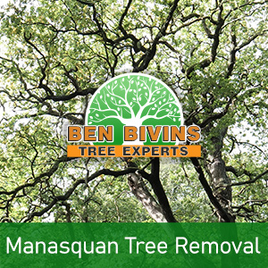
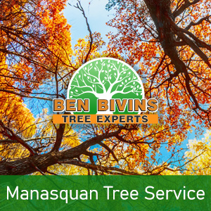

If you and your family require tree removal in Manasquan or tree service in Manasquan, your search is over. Our company has been delivering quality tree services to your town for many years.
Facts About Manasquan Tree Removal

Have you got lifeless or ugly trees which should be removed? Tree removal is often a serious job that will require the proper equipment, machinery and safety protocols. Though it could be tempting to get rid of a tree yourself from your property, it could be a decision that puts someone at risk, without having the proper training. There could be several reasons why you are looking for a tree removal in Manasquan:- Tree is hindering too much sun light in your yard
- Tree is dead or unsafe as well as a possible safety threat
- Tree is too large and presents a threat if large branches fall
- Tree was weakened during a storm and is beyond the stage of salvaging
- You are thinking about remodeling that could eventually harm the trees
- Tree is dropping a great number of branches, leaves, or pine needles
We are a fully insured and licensed tree company. Never assume the associated risk of using an uninsured tree removal company or depending upon a friend or family member to accomplish this type of work. Our crew is professionally educated and our business has the appropriate credentials to make certain your Manasquan tree removal will be carried out in the safest and most effective way possible. Tree removal requires the utilization of heavy machinery and dangerous equipment that should only be left to the pros. Leave it to Ben Bivins Tree Experts! Give us a call today for an estimate on your Manasquan tree removal.
Tree Service in Manasquan NJ – A Look at Our Services

We carry out all aspects of Manasquan tree service. Some of these solutions include:- Tree Trimming – Are trees on your property growing out of control? Is your backyard devoid of sunlight caused by an overgrown tree? Trimming a tree’s limbs will make a big difference and could enable you to maintain a tree you in any other case considered getting rid of.
- Pruning – Keep the trees happy and healthy. Pruning involves assessing a tree’s health and making a decision to eliminate branches selectively to enhance its wellness and sustainability.
- Crown Reduction – We can lessen the size of your tree’s canopy with this process. Our team will evaluate your tree and make suggestions to take out specific branches that will scale back canopy coverage.
- Emergency Tree Service – Do you have a downed tree that needs urgent attention? Is there a tree that’s close to causing harm if it is not addressed right away? You might be a prospect for emergency tree service.
If you’re a Manasquan resident requiring tree service, Give us a call today. Appointment time can vary based on weather, season and our current work load. We will provide you with a quote and let you know dates available for service after evaluating your specific needs.
Your Source for Manasquan Firewood
It’s hardly surprising that a Manasquan tree removal company may have a surplus of firewood! If you are seeking firewood for a wood burning stove or fireplace, contact us today. Firewood availability can vary all through the year.